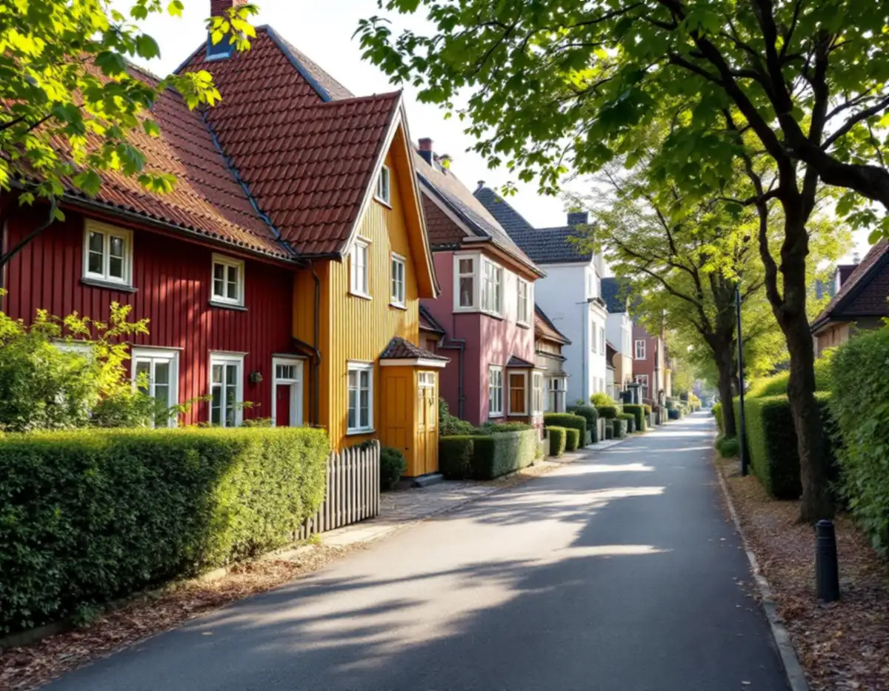
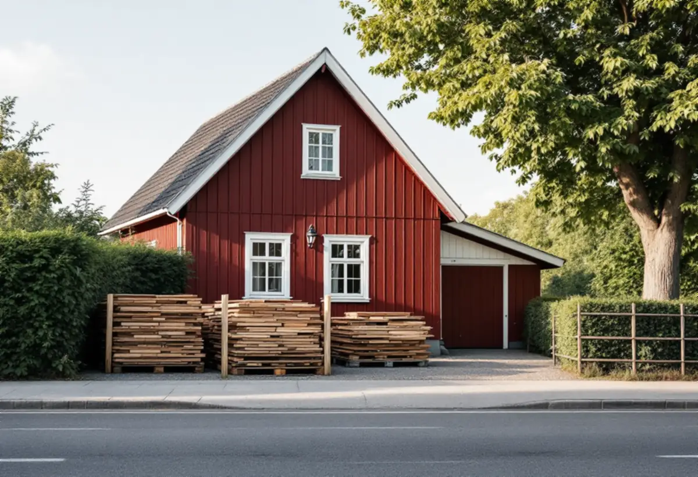

Platsbesök
Vi mäter upp tomten, infarten, gatan och träden framför huset.
I Enskedes trädgårdsstad och på småstugegatorna står husen nära gatan, häckarna är täta och utrymmet framför tomten är litet. En tillbyggnad eller större ombyggnad kräver ändå plats för container, material och ibland en ställning. Geal Entreprenad AB tar byggprojekt som total entreprenad, och i Enskede hör planeringen av själva byggplatsen till det första vi gör.

Gamla Enskede blev Stockholms första trädgårdsstad och anlades efter Per Olof Hallmans stadsplan från 1908, skriver staden i vägledningen Varsam utveckling av småhus- och villaområden. Gatorna fick ett slingrande mönster som följer terrängen. På Enskedefältet och i de andra småstugeområdena kantas de smalare gatorna oftast av häckar, och husen står i liv med gatan eller med en liten förgårdsmark.
För ett byggprojekt betyder det att tomten sällan räcker till allt. Staden skriver att en byggetablering bör placeras i anslutning till byggarbetsplatsen och på den egna fastigheten om det går. Får containern och materialet inte plats där blir gatan nästa alternativ, och då gäller andra regler.

I områden med detaljplan behövs enligt ordningslagen polistillstånd för att använda offentlig plats till byggbodar, upplag, byggplank, ställningar, mobilkranar och liknande. Staden påpekar att marken utanför en fastighet räknas som offentlig plats om allmänheten har eller har haft tillträde till den, oavsett vem som äger den. Polisen skickar ansökan på remiss till trafikkontoret, och om trafikkontoret avstyrker får polisen inte utfärda tillståndet. Tillstyrker kontoret kan det ställa villkor.
Tillståndet ska vara utfärdat innan platsen används, och där står vilka datum som gäller och vilken yta du får använda. I en container eller byggsäck som allmänheten kommer åt får brandfarliga eller hälsofarliga vätskor inte förvaras. Två avgifter tas ut: en administrationsavgift till polisen och en avgift till staden som beror på vilken avgiftszon platsen ligger i.
Står en ställning över gångbanan ska enligt stadens villkor minst 1,6 meter vara fritt under den eller minst 2 meter finnas kvar för gående. En byggskylt får vara högst 15 kvadratmeter per byggprojekt. Ska en mobilkran ställas upp krävs ett eget polistillstånd.
Utöver polistillståndet kan bygglov behövas. Stockholms stad skriver att tillfälliga byggbodar kräver bygglov och att även byggplank, skyltar, upplag och container kan behöva lov. Om containern används som upplag behövs oftast bygglov, och ska människor vistas i den räknas den som en byggnad. Ett glest byggstängsel kräver däremot inget bygglov.
Kontorsarbetsplatser och besöksutrymmen i byggbodar ska dessutom vara tillgängliga för personer med nedsatt rörelse- eller orienteringsförmåga. Vi planerar därför hellre en mindre etablering på tomten än en större ute på gatan.
Ska något göras i gatu- eller parkmark, som att dra en ny ledning, borra för bergvärme eller bara lyfta bort trottoarplattor framför fasaden, krävs schakt- och öppningstillstånd. För fastighetsägare och byggherrar är handläggningstiden för en komplett ansökan normalt sex veckor, enligt trafikkontoret. En samlingskarta beställs samtidigt, och en godkänd trafikanordningsplan behövs. Den som gräver ska ha gått stadens utbildning Trafikanordningar och markarbeten i offentlig mark, som även gäller underentreprenörer och ska gås om vart femte år.
Träd ska enligt stadens anvisningar för byggprojekt skyddas, och föremål får inte placeras inom trädkronans utbredning, den så kallade droppzonen. Gatuträd får inte beskäras utan trafikkontorets medgivande, och träd på stadens mark får inte fällas. Står ett träd på din tomträtt behöver du inte stadens godkännande för att fälla det, men detaljplanen kan ändå kräva marklov. Mer om att bygga ut ett hus här finns på sidan om tillbyggnad i Enskede.
Vi mäter upp tomten, infarten, gatan och träden framför huset.
Container, material och eventuell bod placeras i första hand på tomten.
Etablering, rivning, bygge och återställning redovisas var för sig.
Polistillstånd, bygglov för etableringen och schakttillstånd söks i tid.
En kontakt för alla hantverkare och för grannarnas frågor.
Gatan och marken lämnas i ordning när etableringen tas bort.
Rotavdraget är 30 procent av arbetskostnaden, högst 50 000 kronor per person och år och högst 75 000 kronor tillsammans med rutavdrag. Det gäller arbetet, inte material eller resor.
En tillbyggnad ger avdrag om den sitter ihop med husets yttervägg till minst 75 procent eller har en dörr emellan. Ett nytt hus eller en fristående byggnad som ett garage ger inget avdrag. Vi gör avdraget direkt på fakturan.
Hur mycket som får plats på tomten, om gatan behöver användas och hur länge etableringen står kvar påverkar kostnaden utöver själva bygget. Efter ett gratis platsbesök får du ett skriftligt kostnadsförslag.
Total entreprenad för villan.
Byggfirma →Takbyte, takbesiktning och plåtarbeten.
Takläggare i Enskede →Trädgårdsstad med lertegel.
Takrenovering i Enskede →Trädgårdsstaden, kartan och lovet.
Attefallshus i Enskede →Typhus i trä, träbjälklag och bostadsrätt.
Badrumsrenovering i Enskede →Trädgårdsstadens kulörer.
Fasadmålning i Enskede →Trähus, putsade typhus och småstugor i Enskede.
Fasadrenovering i Enskede →Fönster i riksintresset.
Fönsterbyte i Enskede →Trädgårdsstadens fönster.
Fönsterrenovering i Enskede →Lut, såpa och olja på fur och gran.
Golvläggare i Enskede →Slipa fram gamla brädgolv i villan.
Golvslipning i Enskede →Typhus, dubbelhus och småstugor.
Köksrenovering i Enskede →Trädgårdsstad, egnahem och småstugor i Enskede.
Målare i Enskede →Snörasskydd, rännor och verandaplåt i Enskede.
Plåtslagare i Enskede →Verandor, entréer och bodar i trädgårdsstaden.
Snickare i Enskede →Takfallet, höjden och riksintresset.
Takbyte i Enskede →Tapet i vindsrum och snedtak.
Tapetsering i Enskede →Små tomter och riksintresse.
Tillbyggnad i Enskede →Renovera innan ni flyttar in.
Totalrenovering i Enskede →